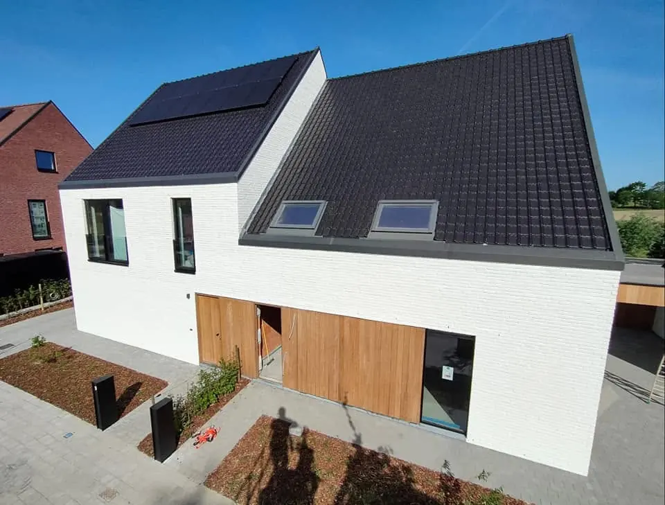
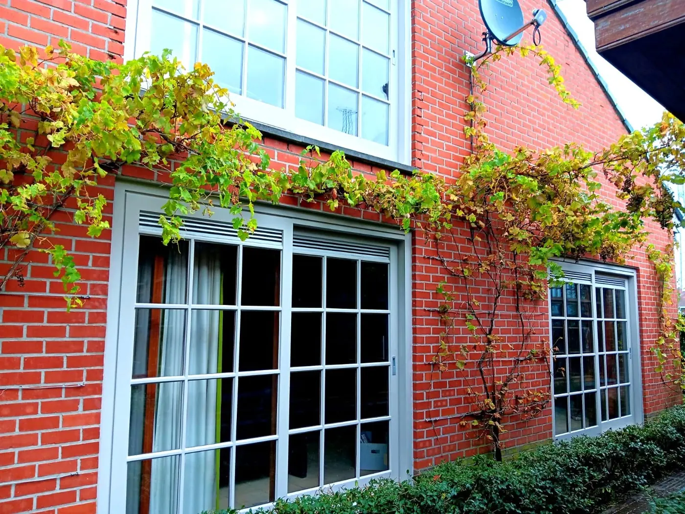

Professionele buitenschilderwerken
Uw gevel, buitenschrijnwerk of gevelbekleding bepalen mee de eerste indruk van uw woning of bedrijfspand. Een professionele afwerking zorgt niet alleen voor een verzorgde uitstraling, maar beschermt ook jarenlang tegen weer, wind en vervuiling.
Bij SDAD combineren we technisch advies, kwaliteitsproducten en vakmanschap tot een duurzaam eindresultaat waarop u jarenlang kunt vertrouwen.
10 jaar garantie op gevelschilderwerk Voorwaarden


Duurzame bescherming voor uw gevel
Een buitenschilderproject draait niet alleen om kleur. De keuze van het juiste verfsysteem, de staat van de ondergrond en een grondige voorbereiding bepalen mee hoe lang het resultaat mooi blijft.
Daarom bekijken we vooraf welke aanpak het meest geschikt is voor uw woning of gebouw. Of het nu gaat om schilderen, kaleien of een combinatie van technieken: we adviseren u graag naar een oplossing die zowel esthetisch als technisch klopt.
Last van mos, vervuiling of verwering?
Geen probleem! Voordat we de gevel met kleur aanpakken, zorgen we eerst dat alle vuil verwijderd is. Zo kunt u bij SDAD terecht voor onder meer de ontmossing en reiniging van gevels, blauwsteen en de dieptereiniging van aluminiumprofielen.
Na de reiniging volgt uiteraard de afwerking. We schilderen de gevel met een primerlaag gevolgd door de nodige afwerkingslagen. Liever kaleien? Ook daarvoor bent u bij SDAD aan het juiste adres. We werken zowel met minerale kalei als met decoratieve kwartstechnieken, afhankelijk van de gewenste uitstraling.
Voor elk buitenproject geeft SDAD steeds voorafgaand technisch advies over het meest geschikte verfsysteem en de ondergrond.
10 jaar garantie op gevelschilderwerk
Voor gevelschilderwerken kunnen wij, mits een geschikte ondergrond en een correct opgebouwd verfsysteem, opleveren met 10 jaar garantie.
Daarom besteden we veel aandacht aan een correcte voorbereiding van de ondergrond, technisch advies en het gebruik van hoogwaardige kwaliteitsproducten.
Voor schilderwerken aan buitenschrijnwerk gelden andere omstandigheden. Houten ramen en deuren worden veel intensiever belast door zon, regen, temperatuurschommelingen en mechanische belasting. Deze werken kunnen daarom niet met dezelfde garantievoorwaarden worden opgeleverd als gevelschilderwerken.
Schilderen of oliën van buitenschrijnwerk
Een gevel nieuw leven in blazen zonder het schrijnwerk van de ramen en deuren af te werken? Dat lijkt natuurlijk nergens naar en komt slordig over. SDAD zorgt er dan ook voor dat het gebouw helemaal piekfijn in orde wordt gebracht door het buitenschrijnwerk ook te schilderen of te oliën.

Zorg dat het plaatje klopt
Een verzorgde gevel verdient een interieur dat diezelfde uitstraling doortrekt. Daarom kunt u bij SDAD niet alleen terecht voor buitenschilderwerken, maar ook voor binnenschilderwerken en decoratieve technieken.
Zo zorgen we ervoor dat alles mooi op elkaar afgestemd is en het totaalplaatje klopt.
Inspiratie uit onze realisaties
Bekijk enkele volledige realisatiesVeelgestelde vragen over buitenschilderwerken
Wanneer is de beste periode om buitenschilderwerken uit te voeren?
Wat is het verschil tussen schilderen en kaleien?
Bij schilderen wordt de bestaande structuur van de gevel behouden. Een verfsysteem beschermt de ondergrond en geeft de gevel een nieuwe kleur en frisse uitstraling, zonder het karakter van de steen of het oppervlak te wijzigen.
Bij kaleien wordt er een minerale kalklaag aangebracht die de gevel een volledig andere uitstraling geeft. De ondergrond krijgt een meer natuurlijke, authentieke en landelijke look. Kalei zorgt voor meer diepte en karakter dan een klassieke schilderafwerking.
Welke techniek het meest geschikt is, hangt af van de uitstraling die u wenst, de staat van de gevel en de technische eigenschappen van de ondergrond. Tijdens een plaatsbezoek adviseren wij u graag over de beste oplossing voor uw woning.
Hoe lang gaat het buitenschilderwerk van een gevel mee?
De levensduur van een buitenschilderwerk hangt af van verschillende factoren, zoals de staat van de ondergrond, de ligging van het gebouw, de weersbelasting en het gekozen verfsysteem.
Bij SDAD besteden we daarom veel aandacht aan een correcte voorbereiding van de ondergrond, technisch advies en het gebruik van hoogwaardige kwaliteitsproducten.
Voor gevelschilderwerken kunnen wij, mits een geschikte ondergrond en een correct opgebouwd verfsysteem, opleveren met 10 jaar garantie.
Voor schilderwerken aan buitenschrijnwerk gelden andere omstandigheden. Houten ramen en deuren worden immers veel intensiever belast door zon, regen, temperatuurschommelingen en mechanische belasting. Daarom is de levensduur hiervan afhankelijk van verschillende factoren en kunnen deze werken niet met dezelfde garantievoorwaarden worden opgeleverd als gevelschilderwerken.
Moet een gevel eerst gereinigd worden?
Ja. Een duurzame afwerking begint altijd met een correcte voorbereiding van de ondergrond.
Mos, algen, straatvuil en andere vervuiling worden eerst verwijderd zodat verf of kalei optimaal kan hechten. Zonder een grondig gereinigde ondergrond kan geen duurzaam verfsysteem worden opgebouwd.
Daarom bekijken we bij elk project vooraf welke reiniging en voorbereiding nodig zijn om een kwalitatief eindresultaat te garanderen.
Schilderen jullie ook ramen en deuren?
Absoluut. Naast gevels verzorgen we ook het schilderen of oliën van houten buitenschrijnwerk zoals ramen, deuren, dakoversteken en andere houten elementen.
Ook PVC- en aluminiumschrijnwerk kunnen wij voorzien van een duurzame schilderafwerking, mits de ondergrond hiervoor geschikt is.
Werken jullie ook op hoogte?
Geven jullie advies over kleuren en afwerking?
Kan ik een vrijblijvende offerte aanvragen?
Een mooi resultaat begint met een goed gesprek.
Tijdens een vrijblijvend plaatsbezoek luisteren we naar uw wensen, geven we professioneel advies en bekijken we samen de mogelijkheden voor uw schilderwerken of interieurafwerking.
Na het vrijblijvende plaatsbezoek ontvangt u een duidelijke offerte en planning. Liever eerst een vraag stellen? Contacteer ons.